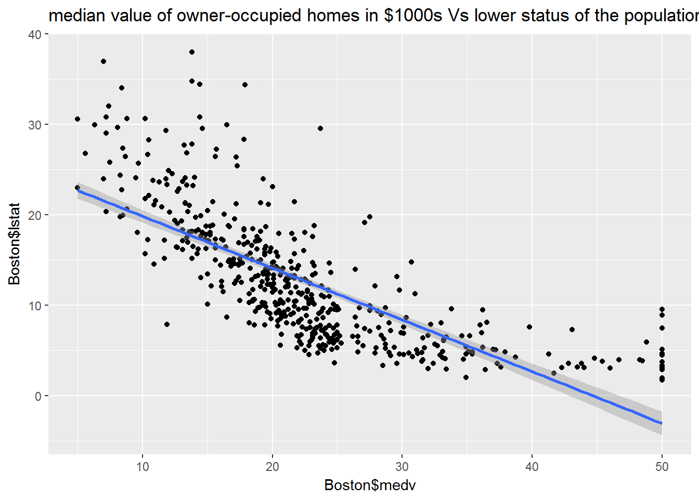
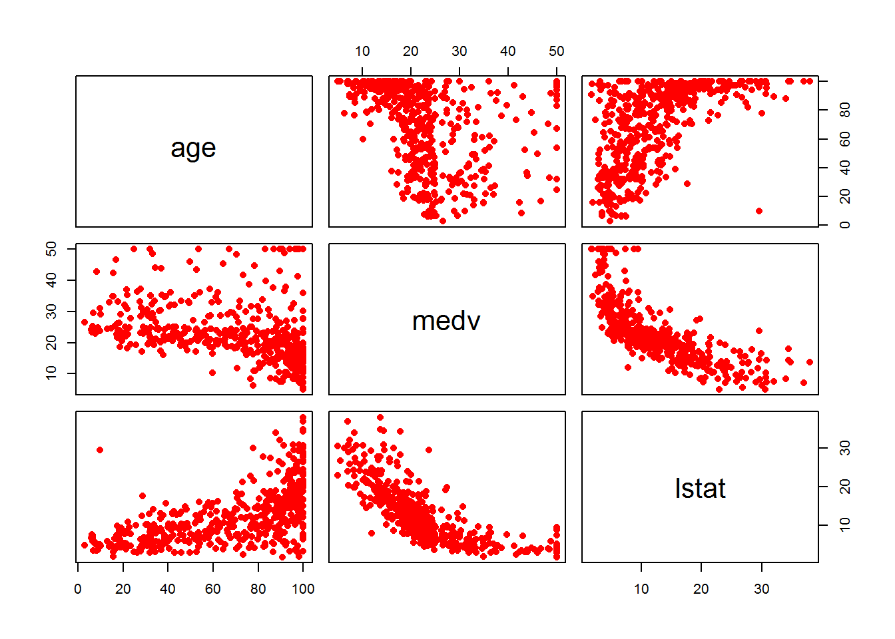
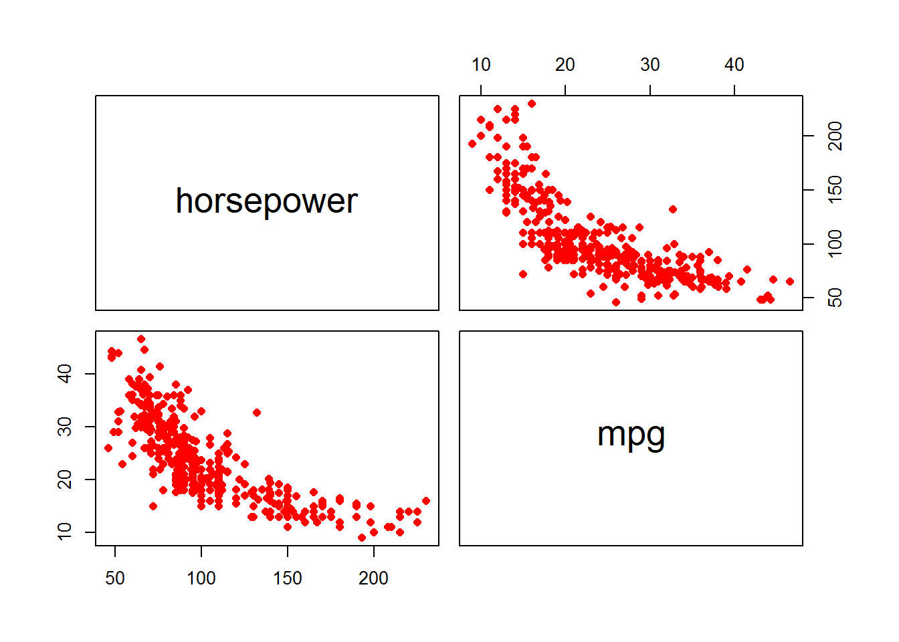

The MASS library contains the Boston data set, which records medv (median house value) for 506 neighborhoods around Boston. We will seek to predict medv using 13 predictors such as rm (average number of rooms per house), age (average age of houses), and lstat (percent of households with low socioeconomic status).
To find out more about the data set, you can type ?Boston. You can check the names of the rest of the variables as follows
library(MASS)
library(ggplot2)names(Boston)## [1] "crim" "zn" "indus" "chas" "nox" "rm" "age"
## [8] "dis" "rad" "tax" "ptratio" "black" "lstat" "medv"Problem: Use the lm() function to fit a simple linear regression model, with medv as the response and lstat as the predictor. Create a summary of your linear model and comment on the results. Include a plot of the data points and the regression line,
Solution:
lm.fit <- lm(medv~lstat, data = Boston)summary(lm.fit)##
## Call:
## lm(formula = medv ~ lstat, data = Boston)
##
## Residuals:
## Min 1Q Median 3Q Max
## -15.168 -3.990 -1.318 2.034 24.500
##
## Coefficients:
## Estimate Std. Error t value Pr(>|t|)
## (Intercept) 34.55384 0.56263 61.41 <2e-16 ***
## lstat -0.95005 0.03873 -24.53 <2e-16 ***
## ---
## Signif. codes: 0 '***' 0.001 '**' 0.01 '*' 0.05 '.' 0.1 ' ' 1
##
## Residual standard error: 6.216 on 504 degrees of freedom
## Multiple R-squared: 0.5441, Adjusted R-squared: 0.5432
## F-statistic: 601.6 on 1 and 504 DF, p-value: < 2.2e-16Plots
ggplot(data = Boston, aes(x = Boston$medv, y = Boston$lstat)) + geom_point() + geom_smooth(method = lm) +
labs( title = "median value of owner-occupied homes in $1000s Vs lower status of the population")
Problem: Using the same dataset from the previous problem, use the lm() function to create a multiple linear regression, with medv as the response and lstat and age as the predictors. Create a summary of your linear model and comment on the results. Find the correlation between lstat and age
Solution:
lm.fit2 <- lm(medv~lstat + age, data = Boston)
summary(lm.fit2)##
## Call:
## lm(formula = medv ~ lstat + age, data = Boston)
##
## Residuals:
## Min 1Q Median 3Q Max
## -15.981 -3.978 -1.283 1.968 23.158
##
## Coefficients:
## Estimate Std. Error t value Pr(>|t|)
## (Intercept) 33.22276 0.73085 45.458 < 2e-16 ***
## lstat -1.03207 0.04819 -21.416 < 2e-16 ***
## age 0.03454 0.01223 2.826 0.00491 **
## ---
## Signif. codes: 0 '***' 0.001 '**' 0.01 '*' 0.05 '.' 0.1 ' ' 1
##
## Residual standard error: 6.173 on 503 degrees of freedom
## Multiple R-squared: 0.5513, Adjusted R-squared: 0.5495
## F-statistic: 309 on 2 and 503 DF, p-value: < 2.2e-16Comments: age and lstat have small p-values, satitically significant and Adjusted R-squared can explain 54% of variability around the mean
Correleation
lm.fit2_data <- Boston[ , c("age", "medv", "lstat")]
pairs(lm.fit2_data, pch=16, col="red") Comments:
We can observe a strong positive correlation between age and lstat:
cor(Boston$age, Boston$lstat)## [1] 0.6023385In this problem we investigate the effect of non-linear transformations of the predictors.
Given a predictor \(X\), we can create a predictor \(X^2\) using I(X^2). The function I() is needed since the ^ has a special meaning in a formula; wrapping as we do allows the standard usage in R, which is I() to raise X to the power 2.
medv onto lstat and lstat^2.Solution:
quadFit <- lm(medv~lstat+I(lstat^2), data = Boston)summary(quadFit)##
## Call:
## lm(formula = medv ~ lstat + I(lstat^2), data = Boston)
##
## Residuals:
## Min 1Q Median 3Q Max
## -15.2834 -3.8313 -0.5295 2.3095 25.4148
##
## Coefficients:
## Estimate Std. Error t value Pr(>|t|)
## (Intercept) 42.862007 0.872084 49.15 <2e-16 ***
## lstat -2.332821 0.123803 -18.84 <2e-16 ***
## I(lstat^2) 0.043547 0.003745 11.63 <2e-16 ***
## ---
## Signif. codes: 0 '***' 0.001 '**' 0.01 '*' 0.05 '.' 0.1 ' ' 1
##
## Residual standard error: 5.524 on 503 degrees of freedom
## Multiple R-squared: 0.6407, Adjusted R-squared: 0.6393
## F-statistic: 448.5 on 2 and 503 DF, p-value: < 2.2e-16Comments:
It is an improved model, Adjusted R-Squared increases from 54 % to 63%, we can explain 63 % of variability around the mean.
p-values are small, statistically significant.
This question involves the use of simple linear regression on the Auto data set from the ISLR package. (you can install that package by typing in the console: install.packages("ISLR"))
library(ISLR)
data(Auto)
str(Auto)## 'data.frame': 392 obs. of 9 variables:
## $ mpg : num 18 15 18 16 17 15 14 14 14 15 ...
## $ cylinders : num 8 8 8 8 8 8 8 8 8 8 ...
## $ displacement: num 307 350 318 304 302 429 454 440 455 390 ...
## $ horsepower : num 130 165 150 150 140 198 220 215 225 190 ...
## $ weight : num 3504 3693 3436 3433 3449 ...
## $ acceleration: num 12 11.5 11 12 10.5 10 9 8.5 10 8.5 ...
## $ year : num 70 70 70 70 70 70 70 70 70 70 ...
## $ origin : num 1 1 1 1 1 1 1 1 1 1 ...
## $ name : Factor w/ 304 levels "amc ambassador brougham",..: 49 36 231 14 161 141 54 223 241 2 ...Use the lm() function to perform a simple linear regression with mpg as the response and horsepower as the predictor.
summary() function to print the results. Comment on the output. For example:
Is there a relationship between the predictor and the response?
How strong is the relationship between the predictor and the response?
What is the predicted mpg associated with a horsepower of 98?
Solution:
Simple linear regression model
lm.auto <- lm(mpg ~ horsepower, data = Auto)summary(lm.auto)##
## Call:
## lm(formula = mpg ~ horsepower, data = Auto)
##
## Residuals:
## Min 1Q Median 3Q Max
## -13.5710 -3.2592 -0.3435 2.7630 16.9240
##
## Coefficients:
## Estimate Std. Error t value Pr(>|t|)
## (Intercept) 39.935861 0.717499 55.66 <2e-16 ***
## horsepower -0.157845 0.006446 -24.49 <2e-16 ***
## ---
## Signif. codes: 0 '***' 0.001 '**' 0.01 '*' 0.05 '.' 0.1 ' ' 1
##
## Residual standard error: 4.906 on 390 degrees of freedom
## Multiple R-squared: 0.6059, Adjusted R-squared: 0.6049
## F-statistic: 599.7 on 1 and 390 DF, p-value: < 2.2e-16p-value for horsepower is significant and Adjusted R-squared is 0.6049 which mean, we can explain 60% of variablity.
The predictor mpg and the response horsepower have a strong negative correlation.
auto.plot <- Auto[ , c("horsepower", "mpg")]
pairs(auto.plot, pch=16, col="red")
cor(Auto$mpg, Auto$horsepower)## [1] -0.7784268Predicted mpg value for a car with horsepower equal 98
predict(lm.auto, list(horsepower = 98))## 1
## 24.46708